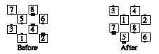
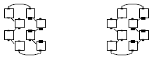
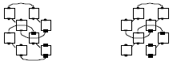

From blocks: Any call which can be done from parallel general columns (columns, double pass thru, etc.), and which ends in general lines or columns, can be done "Staggered." The dancers act as though all dancers were close together side-by-side; however, they end on the original 8 spots on the floor. For example: Stagger Double Pass Thru,

Stagger Circulate From blocks: All move forward along the circulate path below.

Stagger Split Circulate From blocks: All Circulate along the path

Common calls include Circulate, Split Circulate, Walk and Dodge, Peel and Trail, and Trade By.